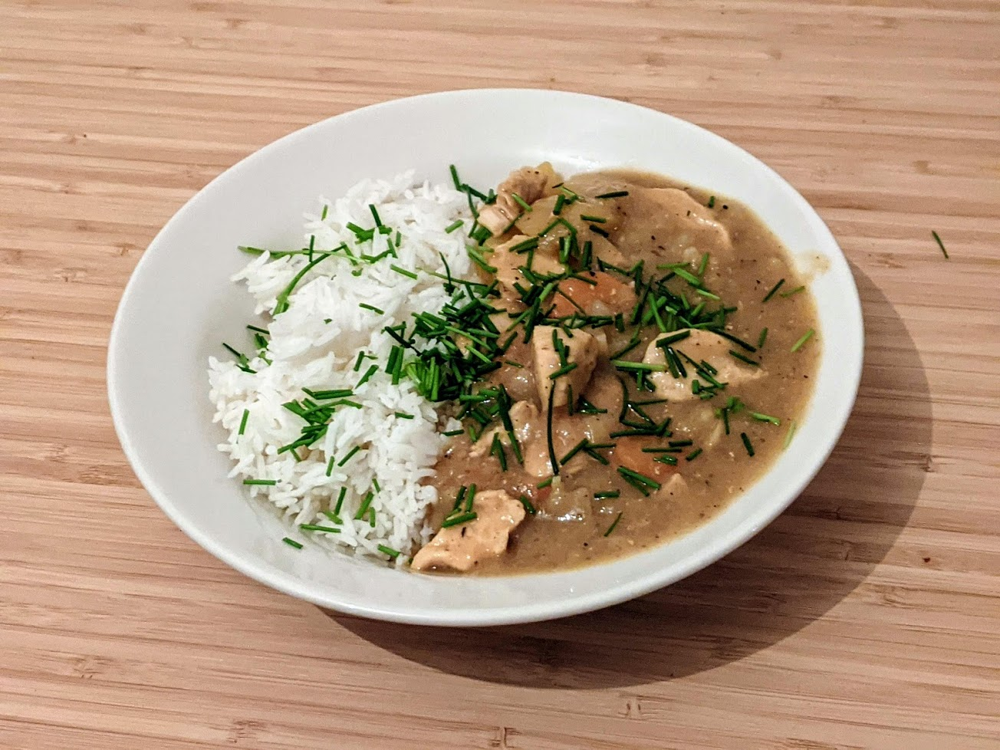

Curry japonais de poulet

Pour 4 personnes :
- Deux oignons
- Deux gousses d'ail
- Une phalange de gingembre
- Un demi-kilo de filet de poulet
- Deux carottes
- Une pomme
- Deux patates
- Un litre de bouillon de poulet (ou de légumes)
- Une cuillère à soupe de miel
- Une cuillère à café de sucre
- Deux cuillères à soupe de ketchup
- Une cuillère à soupe et demie de sauce soja
- 50g de beurre
- 65g de farine
- Une cuillère à soupe de poudre de curry
- Une cuillère à soupe de garam masala
- Une cuillère à café de piment
- Sel, poivre, huile d'olive
- Éplucher et émincer les oignons, les faire revenir au fond d'une casserole à feu moyen, dans de l'huile d'olive.
- Pendant ce temps, éplucher et émincer l'ail et le gingembre, les rajouter dans la casserole lorsque les oignons sont translucides.
- Pendant ce temps, couper le poulet en morceaux de la taille d'un pouce, et les rajouter dans la poêle. Mélanger et faire revenir jusqu'à ce qu'il n'y ait plus rien de rose.
- Pendant ce temps, éplucher et couper les carottes en tranches, les rajouter dans la casserole avec le bouillon, porter à ébullition.
- Éplucher et râper la pomme, la rajouter avec le miel et le sucre dans la casserole. Saler, poivrer, laisser mijoter une vingtaine de minutes.
- Pendant ce temps, faire fondre le beurre dans une petite casserole à feu moyen-doux, et lorsqu'il est liquide, ajouter la farine, le curry, le garam masala, et le piment. Bien mélanger.
- Faire cuire le roux (la pâte obtenue à l'étape précédente) jusqu'à ce qu'il prenne une belle couleur brune, environ 20 minutes, en mélangeant tout le temps.
- Pendant ce temps, éplucher les patates, les couper en petits dés, et les rajouter dans le curry. Les laisser mijoter un quart d'heure.
- Ajouter un peu du jus de cuisson du curry dans la casserole contenant le roux, et mélanger jusqu'à ce que ça soit crémeux et homogène. Ajouter le mélange dans le curry, et mélanger pour faire épaissir la sauce.
- Ajouter le ketchup, la sauce soja, goûter, ajouter un peu de sel ou de sucre si nécessaire. Servir chaud avec du riz.